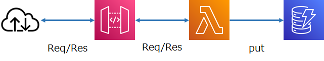

活動(FY2023前期)¶
活動履歴¶
2023.4.14 ～ 2023.4.27¶
前回からの取り組み状況¶
AWS Summit Tokyo 2023 参加¶
(セッション) ハッピーな開発者になろう！ 安心して開発を行うための AWS サービス活用法¶
Amazon CodeCatalyst、AWS Cloud Development Kit、Amazon CodeWhispererの紹介。
個人的には今やっている案件で開発環境の構築やテスト用環境の整備が今まさに面倒だなと思っているところなので、興味深かった。
Amazon CodeCatalyst
AWSに特化した統合開発環境 (Azure DevOpsのAWS版？)
IDE(VSCodeなど)とブラウザが使えれば、端末は何を使ってもかまわない。
ローカルに環境を整える必要はない。ローカル環境もAWS側にある。
開発者の追加があって即対応できる。余計な手間がない。
IDEの起動時間によって課金される。
CI/CD対応。 AWS Cloud Development Kitで環境構築も自動化。個人単位でのテスト環境や、検証環境の払い出しも可。
基本的に無料の範囲でも大抵のことはできる。(展示員談) ホントか？
Amazon CodeWhisperer
コメントから実コードを提案 (Github CopilotのAWS版？)
コメントがある意味ソースコードになる。→ ChatGPTのようにコメント(プロンプト)の書き方が重要になる？
コメントがカバーする範囲は狭いので、ChatGPTほど複雑にはならないのでは？(展示員談)
コメントを書く技術が重要になってくる。
セキュリティスキャンはよさそう。 (ただし有料)
リーガル的な問題は気になる。
AWS側は「責任あるAI」といっていたが・・・。
組織内に閉じて実施することは可能。(展示員談)
(セッション) DX 加速に向けた AWS マネージド サービス活用による運用レス基盤構築への挑戦と社内システムとの共存¶
AWS使うのはいいけど運用やりたくないよね。という開発部隊あるあるの話。
短期開発とNo Operationを実現するため、サーバーレス・マネージドサービスを主体に考えた。
オンラインはAPI Gateway + Lambda + DynamoDB で 200TPS 捌いている
スケールはAPI GatewayとLambdaの数を増やして対応。DynamoDBはCUの上限に注意。
スクラムチームをどうスケールさせていったか
システム開発部門がPOとなり、その責任を負う。
PO不在のスクラム開発って多いよね・・・(ぼやき)
(その他)¶
単純な疑問だが、サービス名がAWS ＊＊＊ だったり、 Amazon ＊＊＊ だったりするが、使い分けの基準はなんだろう？
展示員に聞こうと思ったけど忘れた。
Github PagesとSphinxの導入¶
Github Pages で公開
SphinxのWindows導入向け手順を記載
Amazon CodeCatalystの検証¶
Github Pages で公開
blueprint から API Gateway + Lambda + DynamoDB のREST環境を検証
2023.4.28 ～ 2023.5.10¶
前回からの取り組み状況¶
Amazon CodeCatalystの検証¶
付随してAWS CDKのチュートリアルを実施
作成したサンプルの概要

作成したサンプルコード → Github
作成方法のまとめ → Github Pages
できたこと
一通りの動作
ステージ別のデプロイおよび環境差分対応
日記の執筆¶
提出済み。校正待ち。